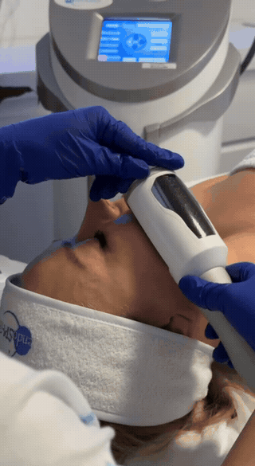

Bitte informieren Sie uns vor Ihrem Termin über bestehende Erkrankungen und eine Schwangerschaft. Bei medizinischen Fragen ist vorab Rücksprache mit Ihrer Ärztin oder Ihrem Arzt erforderlich.
Schwangerschaft
Krebserkrankungen, die sich nicht in Remission befinden
Akute Entzündungen und Hautverletzungen
Thrombosen und akute Venenerkrankungen, einschließlich akut entzündeter Krampfadern
Willkommen bei Endo-SPA — Ihrem Studio für Endospheres-Massage, in dem moderne Technologie für Ihre individuellen Behandlungsziele zum Einsatz kommt.
Unsere Masseure werden regelmäßig geschult und zertifiziert, und unsere Geräte werden laufend gewartet — so können Sie sich bei jeder Behandlung auf Sicherheit und Qualität verlassen.
Im Mittelpunkt unserer Arbeit steht die Endospheres-Therapie. Das ist eine nicht-invasive, apparative Behandlung für Körper und Gesicht, die auf der kompressiven Mikrovibration basiert, einer patentierten italienischen Methode zur gezielten mechanischen Stimulation des Gewebes.
Die Methode verbindet die Wirkung einer apparativen Behandlung mit dem Komfort einer manuellen Massage.
So funktioniert die kompressive Mikrovibration
Ein Handstück mit rotierendem Zylinder und 55 hypoallergenen Silikonkugeln überträgt rhythmische, pulsierende Impulse auf das Gewebe. Kompression und Mikrovibration werden mit einer auf den jeweiligen Bereich abgestimmten Anwendungsdauer kombiniert.
Die Intensität lässt sich individuell anpassen. Bei empfindlicher Haut oder sichtbaren Äderchen klären wir vorab, ob und in welcher Form die Behandlung für Sie geeignet ist.
Die rhythmische Stimulation spricht Haut, Faszien und Muskulatur an. Im Mittelpunkt stehen das Hautbild, die Körperkonturen und das persönliche Körpergefühl — etwa bei Cellulite, Flüssigkeitseinlagerungen oder muskulären Verspannungen.
Ziele eines Behandlungskurses
Körperkonturen und Körperumfang gezielt in den Blick nehmen
Das Erscheinungsbild von Cellulite und unebener Haut verbessern
Den Lymphfluss und die Mikrozirkulation unterstützen
Ein festeres und elastischeres Hautgefühl fördern
Muskulatur entspannen und Verspannungen lösen
Ein leichteres, entspanntes Körpergefühl unterstützen
Mehr zur Anwendung
Druck, Drehrichtung, Drehgeschwindigkeit und Anwendungsdauer werden auf die behandelte Zone und Ihren individuellen Bedarf abgestimmt.
Die Behandlung orientiert sich an einem vom wissenschaftlichen Gremium des Herstellers entwickelten Protokoll. Je nach Handstück und Behandlungsplan können unterschiedliche Körperbereiche behandelt werden — von den Füßen über Beine, Bauch, Gesäß und Arme bis zu Rücken und Nacken.

IM GESICHT
Endospheres für das Gesicht
Die Gesichtsbehandlung arbeitet mit sanfter kompressiver Mikrovibration, ohne Nadeln und ohne invasiven Eingriff. Die rhythmischen Impulse stimulieren das Gewebe und können die Mikrozirkulation sowie den Lymphfluss unterstützen.
Ziele eines Behandlungskurses
Ein frischerer und gleichmäßiger wirkender Teint
Ein strafferes Hautgefühl und definierter wirkende Konturen
Weniger ausgeprägt wirkende feine Linien und Falten
Ein entspannteres Gefühl in der Gesichtsmuskulatur
Mehr zur Anwendung
Nach Angaben des Herstellers zielt die Methode außerdem auf die Unterstützung der körpereigenen Kollagen- und Elastinbildung sowie auf die Stimulation der Gesichtsmuskulatur ab.
Ob eine Wiederholung oder eine Kombination mit anderen kosmetischen oder medizinischen Anwendungen sinnvoll ist, stimmen wir individuell ab. Bereits erfolgte Behandlungen berücksichtigen wir bei der Planung.
Ergebnisse und Empfinden sind individuell. Umfang, Häufigkeit und Eignung der Behandlung besprechen wir im persönlichen Beratungsgespräch.
Haben Sie Fragen? Lassen Sie uns persönlich sprechen!
Wir nehmen uns gerne Zeit für Sie und klären all Ihre Anliegen ganz unverbindlich am Telefon oder bei uns im Studio.
Vor Beginn der Behandlung führen wir ein ausführliches Erstgespräch, in dem wir Ihre individuellen Wünsche und Ziele besprechen. Mit einer gründlichen Anamnese prüfen wir mögliche Kontraindikationen und stimmen die Behandlung bestmöglich auf Sie ab. Es wird empfohlen, vor und nach der Behandlung reichlich Wasser zu trinken.
02
Die Behandlung
Während der Behandlung liegen Sie entspannt auf der Liege. Das Endospheres-Handstück gleitet sanft über den Körper, und Sie spüren eine angenehme Vibration. Eine Sitzung dauert in der Regel etwa 30 bis 60 Minuten.
03
Nach der Behandlung
Im Anschluss erhalten Sie Pflegeempfehlungen, und Sie können in der Regel direkt in Ihren Alltag zurückkehren. Wie sich Hautgefühl und Gewebe entwickeln, ist individuell verschieden. Je nach Ausgangslage und Ziel kann eine Serie von Anwendungen sinnvoll sein. Den Rhythmus stimmen wir gemeinsam mit Ihnen ab.
EINBLICK IN DIE BEHANDLUNG
Die Technologie in Anwendung
Sehen Sie, wie die Endospheres-Behandlung im Studio abläuft. Die Intensität und die behandelten Bereiche werden persönlich mit Ihnen abgestimmt.
EINBLICKE IN BEHANDLUNGSVERLÄUFE
Vorher & nachher
Dokumentierte Beispiele aus unserem Studio. Ergebnisse sind individuell und nicht auf jede Person übertragbar.
FORSCHUNG & STUDIEN
Über 20 Jahre im Zeichen der Forschung
Seit über 20 Jahren stehen Forschung und Studien im Mittelpunkt der Arbeit der Fenix Group.
Die Fenix Group ist ein italienisches Unternehmen, das die Endospheres-Methode in Zusammenarbeit mit Fachleuten aus Physiotherapie, Phlebologie und ästhetischer Medizin konzipiert, entwickelt und patentiert hat.
Dank umfangreicher Erfahrung im Ingenieurwesen und in der Biomechanik hat sich das Unternehmen mit der Endospheres-Technologie international etabliert.
Nach Unternehmensangaben ist die Fenix Group heute mit der Endospheres-Therapie in über 40 Ländern und in mehr als 2.000 Beauty-Studios, Kliniken für ästhetische Medizin sowie Wellness- und Spa-Hotels vertreten.
Wissenschaftliche Zusammenarbeit
Zu den genannten Einrichtungen zählen:
Universität G. D’AnnunzioChieti · Abteilung für Physiotherapie
ITABInstitut für fortgeschrittene biomedizinische Technologien · Chieti
Accademia Italiana della BellezzaItalienische Akademie der Schönheit · Arezzo
Wählen Sie zwischen Endospheres und Endospheres Evolution. Beide Preislisten bieten Unterkörper-, Ganzkörper- und Gesichtsbehandlungen.
Vergleich mit derselben Anzahl an Einzelbehandlungen.
Unterkörper
Bauch, Beine, Po
75 €ab 45 Minuten · Einzelbehandlung
Behandlungspakete
6 Behandlungen
Summe der Einzelpreise: statt 450 €405 €
12 Behandlungen
Summe der Einzelpreise: statt 900 €765 €
Ganzkörper
Ganzkörperbehandlung
85 €ab 60 Minuten · Einzelbehandlung
Behandlungspakete
6 Behandlungen
Summe der Einzelpreise: statt 510 €460 €
12 Behandlungen
Summe der Einzelpreise: statt 1.020 €870 €
Gesicht
Gesichtsbehandlung
55 €ab 30 Minuten · Einzelbehandlung
Behandlungspakete
6 Behandlungen
Summe der Einzelpreise: statt 330 €300 €
12 Behandlungen
Summe der Einzelpreise: statt 660 €560 €
Unterkörper
Bauch, Beine, Po
85 €ab 45 Minuten · Einzelbehandlung
Behandlungspakete
6 Behandlungen
Summe der Einzelpreise: statt 510 €460 €
12 Behandlungen
Summe der Einzelpreise: statt 1.020 €870 €
Ganzkörper
Ganzkörperbehandlung
99 €ab 60 Minuten · Einzelbehandlung
Behandlungspakete
6 Behandlungen
Summe der Einzelpreise: statt 594 €535 €
12 Behandlungen
Summe der Einzelpreise: statt 1.188 €1.010 €
Gesicht
Gesichtsbehandlung
70 €ab 30 Minuten · Einzelbehandlung
Behandlungspakete
6 Behandlungen
Summe der Einzelpreise: statt 420 €380 €
10 Behandlungen
Summe der Einzelpreise: statt 700 €595 €
Welches Angebot passt zu mir?
Die Dauer richtet sich nach der gewählten Behandlung: Unterkörper ab 45 Minuten, Ganzkörper ab 60 Minuten, Gesicht ab 30 Minuten. Welches Gerät und welcher Umfang zu Ihnen passen, besprechen wir persönlich.
Ausgewählte Auszüge aus öffentlich sichtbaren Google-Rezensionen. Individuelle Erfahrungen. Bewertungsstand: 14.10.2026.
HÄUFIGE FRAGEN
Ihre Fragen zur Endospheres-Behandlung
Die wichtigsten Antworten für Ihren ersten Besuch. Weitere Fragen finden Sie nach Themen geordnet.
Tut die Endosphere-Behandlung weh?
Nein, die Behandlung fühlt sich wie eine intensive, aber angenehme Massage an — ohne Schmerzen und ohne blaue Flecken.
Wann sind die ersten Ergebnisse sichtbar?
Erste Veränderungen am Haut sind meist schon nach 2-3 Behandlungen sichtbar, ein dauerhaftes Ergebnis nach einer vollständigen Serie von 6–12 Sitzungen. Für noch erstaunlichere Ergebnisse wird empfohlen, Endospheres-Behandlungen mit einer gesunden Ernährung und körperlicher Aktivität zu kombinieren.
Wie oft sollte man die Behandlung machen?
Optimal ist Kur von 2-3 Sitzungen pro Woche. Die genaue Anzahl hängt jedoch vom Zustand des Körpers des Kunde ab. Bei Übergewicht und Stadium 3-4 Cellulite können auch mehr als 12 Behandlungen erforderlich sein. Zwischen zwei Terminen sollte mindestens ein Tag Pause liegen. Danach empfehlen wir eine Auffrischung einmal im Monat.
Gibt es Einschränkungen nach der Behandlung?
Es gibt keine besonderen Einschränkungen — Sie können direkt zu Ihrem Alltag zurückkehren. Empfohlen wird lediglich, vor Behandlung und danach ausreichend Wasser zu trinken.
Wie lange hält die Anti-Cellulite-Wirkung die Behandlung an?
Die Endosphere-Therapie ist ein nicht-invasives Verfahren. Für ein gutes Ergebnis empfehlen wir mindestens ab 6-8 Sitzungen (2-3 Mal pro Woche). Danach kann die Wirkung durch regelmäßige Auffrischungen erhalten werden. Wie lange sie anhält, ist individuell verschieden und hängt unter anderem von Ihrem Lebensstil ab: Sport, ausgewogene Ernährung und ausreichend Wassertrinken tragen wesentlich dazu bei. Ohne Folgebehandlungen kann die Wirkung nach unserer Erfahrung 4-6 Monate anhalten.
Wie messen Sie und was passiert nach der Behandlung ?
Gemessen wird nicht das Körpergewicht, sondern der Umfang an den Problemzonen, zum Beispiel an Taille, Hüfte, Brust und Armen, jeweils in Zentimetern. Vor und nach dem Kurs wird gemessen, so sind Veränderungen sichtbar.
Die Endosphere-Therapie verbessert die Hautqualität und das Hautbild: Die Haut wird straffer und glatter, das Gewebe wird angeregt und der Stoffwechsel aktiviert. Sie ersetzt aber keine Diät. Wer sich ausgewogen ernährt und aktiv bleibt, unterstützt das Ergebnis zusätzlich und kann auch an Gewicht verlieren.
Kann es während der Schwangerschaft und Stillzeit angewendet werden?
In der Schwangerschaft führen wir die Behandlung nur in Absprache mit Ihrer Frauenärztin oder Ihrem Frauenarzt durch. Der Hersteller empfiehlt, nicht vor dem 7. Schwangerschaftsmonat zu beginnen. Bauch und Lendenbereich werden nicht behandelt, Arme, Beine und Rücken (Schulterbereich) schon. In der Stillzeit ist eine Behandlung möglich, in der Regel etwa 2 Monate nach der Geburt. Nach einem Kaiserschnitt erst, wenn die Narbe vollständig verheilt ist und Ihr Arzt zugestimmt hat.
Gibt es Nebenwirkungen nach der Endospheres Therapie?
Kleinere Rötungen oder Schwellungen können in seltenen Fällen auftreten, klingen jedoch meist innerhalb weniger Stunden ab.
Weitere Fragen nach Thema
Kurs & Alltag4 Fragen
Kann die Behandlung direkt nach dem Sporttraining durchgeführt werden?
Das Endospheres-Verfahren wird am besten unmittelbar nach dem Training durchgeführt, um Milchsäure aus den Muskeln zu entfernen und Kontrakturen zu lindern.
Hilft die Endosphere-Therapie im Kampf gegen Dehnungsstreifen?
Wenn die Dehnungsstreifen „frisch“ genug sind, wird der Effekt deutlich spürbar sein. Dank der Verbesserung der Mikrozirkulation im Gewebe und der Stimulierung der Kollagen- und Elastinproduktion beginnt die „Nahrung“ in den Dehnungsstreifenbereich zu fließen, wodurch diese optisch weniger auffällig werden. Das Peeling mit Kugeln während des Eingriffs und der Hautton nach dem Eingriff tragen ebenfalls dazu bei, das Relief zu glätten und das Erscheinungsbild von Gewebe mit Dehnungsstreifen ästhetisch zu verbessern.
Ist es möglich, Endospheres-Therapie während der Menstruation anzuwenden?
-Das Endospheres-Verfahren kann während der Menstruation durchgeführt werden, wenn keine Schmerzen oder starker Ausfluss auftreten. Genauso wie ins Fitnessstudio zu gehen. Wenn der Zustand normal ist und Sie nichts stört, können Sie den Eingriff durchführen und Sport treiben. Es ist möglich, dass die Ausflussmenge nach dem Eingriff leicht ansteigt.
Ist die Behandlung schmerzhaft?
Die Behandlung sollte nicht schmerzhaft sein. Bei Muskelkontrakturen und fibröser Cellulite treten bei jeder Massage Schmerzen auf. Der Vorteil und Nutzen von Endospheres-Geräten besteht darin, dass der Therapeut dank der Möglichkeit, die Expositionsfrequenz zu regulieren (von mindestens 29 Hertz bis maximal 360 Hertz), für jeden Patienten individuell die ideale Frequenz auswählen kann .
Der Vorgang muss bei dieser Frequenz gestartet werden, wobei die Leistung beim zweiten Durchgang oder bei nachfolgenden Behandlungen erhöht wird. Die Therapie hat eine schmerzstillende Wirkung.
Gesicht & Kombinationen6 Fragen
Ist eine Biorevitalisierung unmittelbar nach Endosphere® im Gesicht möglich?
Nach Endospheres-Behandlung sollte eine Biorevitalisierung durchgeführt werden, die Wirkung wird sich nur verbessern.
Ist es möglich, Endospheres und Laser-Haarentfernung zu kombinieren?
Dabei handelt es sich um zwei unterschiedliche Verfahren, die nicht voneinander abhängig sind. Nach Endospheres-Behandlung können Sie eine Haarentfernung durchführen. Nach der Epilation müssen Sie eine Pause einlegen, um die Haut nicht durch den Aufprall des Manipulators zu reizen.
Was sind die Kontraindikationen für die Endosphere®-Gesichtsbehandlung?
-Kontraindikationen: Herpes, mittelschwere und schwere Akne, Dermatitis und Dermatosen im akuten Stadium im Behandlungsbereich.
Entfernt Endospheres-Massage Füllstoffe?
Klinischen Studien zufolge kann Endosphere® Facial mit Fillern wie folgt kombiniert werden: Behandlung mit Hyaluronsäure wirken sich daher auf das Gewebe aus wenn Sie bereits Filler hatten, müssen Sie etwa 30 Tage warten. Wenn Sie Filler durchführen möchten, können Sie dies 7 Tage nach Abschluss der Endospheres-Behandlungen tun. In jedem Fall verändert Endospheres die Position der Füllstoffe 20 Tage nach der Behandlung nicht, sondern beschleunigt die Aufnahme des Produkts.
Wie viele Gesichtsbehandlungen werden empfohlen und in welchem Abstand?
2-3 mal pro Woche ( Mindestpause 24 Stunden), wenn Zeit und Lust vorhanden sind. Ein Kurs von 6 bis zu 12 Behandlungen bis ins Unendliche..
Ist es möglich, Endospheres für das Gesicht zu verwenden, wenn Sie Akne haben?
Bei Akne zum Zeitpunkt der Exazerbation kann die Endospheres-Gesichtsbehandlung (wie jede andere auch) nicht durchgeführt werden. Während der Remissionsphase können Sie der Behandlung problemlos durchführen. Endospheres zeigt hervorragende Ergebnisse bei der Lösung von Post-Akne-Problemen.
Eignung & Methodenvergleich5 Fragen
Ist es möglich, die Behandlung an den Beinen durchzuführen, wenn die Venen sehr ausgeprägt sind?
Ja, in der Regel ist das möglich. Die Endospheres-Therapie wurde von Phlebologen entwickelt und kann auch bei Besenreisern und Krampfadern angewendet werden. Das Gerät passt die Intensität dank Sensoren automatisch an, und bei Venenproblemen arbeiten wir mit besonders sanften Frequenzen (40–60 Hz). Die Kompressionsmikrovibration® wirkt wie eine Gefäßgymnastik: Sie stärkt die Gefäßwände, fördert die Durchblutung und ermöglicht die Lösung vieler phlebologischer Probleme.
Warum stellen sie Endospheres-Behandlung nicht in einem Anzug her?
Für die Endospheres-Massage ist kein Anzug erforderlich, da die Kugeln die Haut nicht verletzen und ohne Anzug alle Probleme sichtbar sind – Gefäße, Venen, Kapillaren usw.
Wie unterscheidet sich die LPG-Technik von der Endospheres-Therapie?
Wie alle Vakuumtechniken hat auch LPG Kontraindikationen und Nebenwirkungen. Bei unsachgemäßer Durchführung des Eingriffs kann es daher an manchen Problemzonen zu Erschlaffung der Haut kommen, und die Methode erlaubt keine Behandlung von Krampfadern, Gefäß- und Kapillarnetzen und erlaubt beispielsweise keine Behandlung der Innenfläche des Oberschenkels (hier verlaufen unsere Hauptvenen und dieser Bereich ist für absolut alle Frauen von entscheidender Bedeutung).
Endospheres-Therapie basiert sich auf kompressive Microvibration, mit der war die Phase der „Saug- und Gewebedehnungstechnik“ ersetzt.
Woher wissen Sie, dass der Salon ein Originalgerät verwendet?
-Fotos von Originalgeräten
Die Originalkugeln sind transparent, es gibt eine Fälschung mit blauen Kugeln, es gibt eine Fälschung mit schwarzen…
Auf dem Originalgerät befindet sich ein Emblem „Endospheres“
Das Original-Endospheres funktioniert nicht entsprechend dem Anzug; die Fälschung funktioniert entsprechend dem Anzug.
Die Fachkraft muss über einen Ausbildungsnachweis bei uns verfügen.
Das Original Endospheres kostet in Salons, in denen auf alles geachtet wird, ab ca.100 €.
Wenn Sie sich entscheiden, wohin Sie gehen möchten, prüfen Sie am besten die Informationen auf der offiziellen Website des Herstellers.
Ist dies eine Kontraindikation, wenn eine Person in der Vergangenheit an Krebs erkrankt war?
Wenn der Krebs in Remission ist, ist es besser, Ihren Arzt zu fragen. Sie müssen verstehen, um welche Art von Onkologie es sich handelt, in welchem Stadium, bei welcher Behandlung usw. Dies kann nur der behandelnde Arzt sagen, es ist für alle zuverlässiger.
Noch unsicher, ob die Behandlung zu Ihnen passt?
Schlechte Erfahrungen mit schmerzhaften Massagen und blauen Flecken
Schon vieles probiert, nur kurzfristige Ergebnisse
Unsicherheit, ob apparative Behandlungen wirklich wirken
Ob eine Endospheres-Behandlung die richtige Wahl für Sie ist, klären wir gemeinsam im persönlichen Beratungsgespräch.